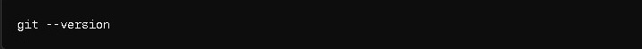

In the ever-evolving landscape of software development, version control systems (VCS) are the backbone of efficient collaboration and code management. Among these, Git reigns supreme, paired seamlessly with GitHub, a platform that revolutionizes the way developers work together. In this blog, we embark on a journey to demystify Git and GitHub, unraveling their significance and exploring their practical applications in the world of version control.
Understanding Version Control Systems:
Before getting into the specifics of Git, it's crucial to understand the fundamental concept of version control systems. Imagine you're working on a project—a website, an app, or any software endeavor. As you make changes to the codebase, it's essential to keep track of these modifications systematically. Here comes the role of a version control system.
A version control system allows developers to manage changes to their codebase over time. It serves as a safeguard against errors, facilitating collaboration among team members, and providing a mechanism to revert to previous versions if necessary. Essentially, it ensures the integrity and coherence of the project throughout its lifecycle.
Introductory vedio:
GIT:
Git, developed by Linus Torvalds in 2005, has transformed the way developers handle version control. Unlike traditional centralized systems, Git is distributed, meaning every developer has a complete copy of the repository, enabling seamless collaboration and offline work.
Installing Git
First you need to check if Git is installed on your machine. To do this:
Open a terminal or command prompt: Depending on your operating system, you can find a terminal or command prompt application. On Windows, you can search for "Command Prompt" on the start menu.
Check for Git installation: In the terminal or command prompt, type "git --version"
command and press Enter- This command checks if Git is installed and prints its version if it is installed.
Checking whether git is installed
Interpreting the output:If Git is installed, you'll see output similar to this: git version 2.33.1. This means Git is installed, and you can start using it.
If Git is not installed, you'll likely see an error message stating that the command 'git' is not recognized. In this case, you need to download and install Git.
If Git is not installed, here's how you can download and install it:
Go to the official Git website: Git for Windows.
Click on the "Download" button to download the latest version of Git for Windows.
Once the download is complete, run the installer.
Follow the installation instructions, accepting the default settings unless you have a specific reason to change them.
After the installation is complete, you should be able to use Git from the command prompt.
simple explanation
Configuring Git
Open a terminal or command prompt: Just like before, open a terminal or command prompt on your computer.
Set your username: To set your username, use git config --global user.name "Your Name"
" command: Replace "Your Name" with your actual name, enclosed in double quotes. This command sets your username globally, so it will be used for all repositories on your machine.
Set your email address: To set your email address, use git config --global user.email "your.email@example.com"
command Replace "your.email@example.com" with your actual email address. Like setting the username, this command sets your email address globally for all repositories on your machine.
GIT REPOSITORY
What is a Git Repository?
A Git repository, often referred to simply as "repo," is a directory or storage location where your project's files and version history are stored. It's essentially a database that tracks changes to files over time. Git repositories enable collaboration, version control, and the ability to revert to previous states of your project.
How to Initialize a Git Repository:
To initialize a Git repository for your project, follow these steps:
Navigate to your project directory: Open a terminal or command prompt where your project files are located
Initialize the Git repository: Once you're in your project directory, run "git init"
command to initialize a new Git repository:
This command initializes a new Git repository in the current directory. Git will create a hidden directory called .git, which stores all the version control information for your project.
Add your project files to the repository: After initializing the repository, you need to add your project files to it. You can add all files in the directory using git add .
command The ' . 'symbol means "all files." Alternatively, you can specify individual files or directories to add.
Commit your changes: Once you've added your files, you need to commit them to the repository. This creates a snapshot of your project at its current state. Use 'git commit -m "Initial commit" '
command to commit
Replace ' "Initial commit" '' with a descriptive message that explains the changes you're committing. This message helps you and others understand the purpose of the commit.
BRANCHES
In Git, a branch is essentially a parallel version of your repository. It's like a separate timeline of changes that diverges from the main line of development (often called the "master" branch). Each branch can have its own commits, allowing you to work on different features, bug fixes, or experiments without affecting the main project until you're ready to merge your changes.
Creating a branch
Ensure you're on the main branch (optional): Before creating a new branch, it's a good practice to ensure that you're on the branch from which you want to create the new branch. Typically, this would be the main branch (e.g., master or main). You can check your current branch by running git branch
command.
This command is also used to view all Branches.
Create a new branch: To create a new branch, use the git branch command followed by the name you want to give to your new branch 'git branch feature-branch
'. For example, if you want to create a branch named 'feature-branch' This command creates a new branch named 'feature-branch' based on the current state of your repository. However, it doesn't switch you to that branch yet.
To Switch to the new branch: If you want to start working on the newly created branch immediately, you can switch to it using the 'git checkout' command.This command switches you to the feature-branch, allowing you to start making changes and commits on this branch.
Merging Branches
Ensure you're on the branch where you want to merge changes: Before merging branches, make sure you're on the branch where you want to integrate changes. For example, if you want to merge changes from a feature branch into the main branch (master or main), switch to the main branch using the 'git checkout' command
Replace 'main' with the name of your main branch if it's different.
Merge the branch: Once you're on the target branch, you can merge changes from another branch using the git merge command followed by the name of the branch you want to merge. For example, if you want to merge changes from a branch named feature-branch into the main branch
This command will merge the changes from feature-branch into the current branch
Resolve conflicts (if any): If Git encounters conflicts during the merge, it will pause the process and notify you which files have conflicts. You'll need to manually resolve these conflicts by editing the conflicting files, marking the conflicts as resolved, and then completing the merge.
Commit the merge:
After resolving any conflicts, you need to commit the merge to finalize it. Git automatically creates a merge commit to record the merge operation. Simply use the 'git commit command to commit the merge
This will open your default text editor to enter a commit message for the merge commit.
Deleting a Branch
Delete the branch:
To delete a branch, use the git branch -d command followed by the name of the branch you want to delete. For example, if you want to delete a branch named feature-branch it would be ' git branch -d feature-branch
'
ADVISORY
After learning about basic Git commands like initializing a repository, creating branches, merging branches, and deleting branches, there are several next steps you can take to deepen your understanding of Git and enhance your workflow:
Learn about Git Remote: Git remote allows you to connect your local repository to remote repositories hosted on platforms like GitHub, GitLab, or Bitbucket. You can learn how to add, remove, and manage remote repositories, as well as how to push and pull changes between your local repository and remote repositories.
Explore Git Collaboration Workflows: Git offers various collaboration workflows for teams working on the same project. Learn about popular workflows like Centralized Workflow, Feature Branch Workflow, Gitflow Workflow, and Forking Workflow. Understanding these workflows will help you collaborate more effectively with other developers.
Master Git Branching Strategies: Branching is a powerful feature of Git, and there are several branching strategies you can adopt based on your project's needs. Learn about branching strategies like feature branching, release branching, and hotfix branching. Understanding these strategies will help you organize and manage your project's development process.
Familiarize Yourself with Git Tools: Git offers a wide range of tools and utilities to enhance your workflow. Explore tools like Git GUI clients (e.g., GitKraken, Sourcetree), Git IDE integrations (e.g., Visual Studio Code, IntelliJ IDEA), and Git extensions (e.g., Git LFS for large files, Git Submodules for managing dependencies). Experimenting with these tools will help you find the ones that best suit your workflow.
Contribute to Open Source Projects: Contributing to open-source projects is a great way to apply your Git skills in real-world scenarios and collaborate with other developers. Look for projects that interest you on platforms like GitHub and start contributing by fixing bugs, adding features, or improving documentation.
key features that make Git a preferred choice for developers worldwide:
Speed and Efficiency: Git's lightweight design and efficient branching model enable lightning-fast operations, making it ideal for projects of any scale.
Flexibility: With Git, developers have the freedom to work offline, experiment with different features, and collaborate seamlessly across distributed teams.
Branching and Merging: Git's branching and merging capabilities empower developers to work on multiple features concurrently, facilitating parallel development workflows.
Data Integrity: Git employs cryptographic hashing to ensure the integrity of the repository, providing a robust and secure version control solution.